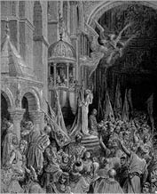
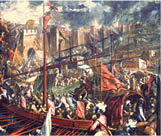
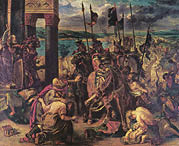
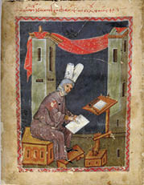
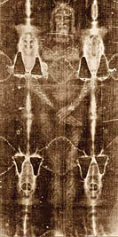
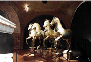
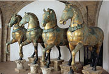

Kıyamet Günü: Konstantinopolis’in İşgali ve Talanı
John Julius Norwich, Bizans kitabında, Doğu Roma İmparatorluğu’nun sonunu getiren ve Hıristiyanlık âlemini Ortodokslar-Katolikler diye bölen Latin saldırısını şu sözlerle başlatır:
“8 Kasım 1202’de Dördüncü Haçlı Seferi donanması Venedik’ten demir aldı. Ama donanmayı oluşturan 480 savaş gemisinin hedefi, ne Filistin ne de Mısır’a varmaktı. Yola çıktıktan bir hafta sonra, Zara’yı26 işgal edip yağmaladılar. Bu saldırıya çok öfkelenen Papa Üçüncü Innocentius, sefere çıkanların tümünü aforoz etti. Dördüncü Haçlı Seferi kötü başlamış ama en kötüsüne daha sıra gelmemişti.
1203 yılı başında bir ulak, Venedik Dukası’na Kutsal Roma Germen Kralı’nın bir mektubunu iletti. Kral Philippe de Souabe, hem İngiliz İmparator Altıncı Henri’nin kardeşi, hem de Konstantinopolis tahtından indirilip gözleri oyulan sabık Doğu Roma İmparatoru Isaakios Angelos’un damadıydı. Isaakios’un oğlu Aleksios Angelos, canını kurtarmak için Konstantinopolis’ten kaçıp akrabası Kutsal Roma Germen Kralı’na sığınalı bir yıl oluyordu.
Kral Souabe, Venedik Dukası Dondolo’ya mektubunda, eğer Haçlılar, Konstantinopolis tahtına oturan sahtekâr dayısını indirip, yerine genç Aleksios’u tahta çıkarırlarsa; donanmanın daha sonra çıkacağı Mısır seferinin masraflarını üstlenmeye, sefere on bin asker katmaya ve Kutsal Topraklar’da nöbet tutacak beş yüz şövalye beslemeye söz veriyordu. Dahası, Aleksios Angelos tahta çıkınca, Konstantinopolis Kilisesi’ni de Latin Roma Kilisesi’nin hükmüne bırakacaktı.
İhtiyar Venedik Dukası, öneriyi sevinçle kabul etti. Bizans’tan nefret ediyordu. Venedikli tüccarlar, Konstantinopolis’teki Ceneviz ve Pisalı rakipleriyle mücadelede giderek zorlanıyordu. Venedik Cumhuriyeti’nin Doğu pazarını tamamen yitirmemesi için hızlı davranması gerekiyordu.
Haçlı donanması da öneriye pek sevindi. Seferin menzil değişikliği, hem Haçlı şövalyeleri zengin edecek hem de Hıristiyan âleminin bütünlüğü sağlanacaktı.
Kutsal Roma Germen Haçlı donanması, Venedik’te toplandıktan tam bir yıl sonra, 24 Haziran 1203’te Konstantinopolis açıklarına demir attı...”
Dünya siyasal coğrafya tarihinin en geniş sınırlarına hükmeden, en önemli Roma İmparatoru Büyük Konstantin’in 11 Mayıs 330’da başkent ilan ettiği Konstantinopolis’te, 24 Haziran 1203’ten öteye yaşanan bir yılın ayrıntılarına girmeyeceğim.
Hepsi düşmanın kuklası yeteneksiz muhteris imparator bozuntula-

Venedik Dukası Enrico Dandolo’nun San Marco Meydanı’nda
Haçlı Seferi ilanı.

1204. Konstantinopolis’in Haçlı İşgali (Ressam: Palma Le Jeune)

1204. Konstantinopolis’in Haçlılar tarafından talanı
(Ressam: Eugene Delacroix/Louvre Müzesi)
rından birinin indirilip ötekinin bindirildiği tahtın “payitahtı”, bu bir yılda iki kez yakıldı. Hıristiyanların birbirini boğazladığı kanlı bir içsavaş ve iki Haçlı kuşatmasına sahne oldu.
Papa Innocentius’un, dördüncü Haçlı ordusunu gerek seferin başında gerekse Konstantinopolis’e saldırıları sırasında topyekûn aforozu, saldırganları caydıracak yerde, tam tersi sonuç verdi: Papa tarafından aforoz edilmek, ölümden sonra “cehennemde sonsuza kadar yanmak” mahkûmiyetiydi. Konstantinopolis’e saldıran Haçlı askerler, zaten aforozu yemiş ve en büyük cezaya mahkûm olmuşlardı. Madem ki ölünce cehenneme gidecekleri kesindi, yaşadıkları sürece artık her günahı işleyebilir, her kötülüğü yapabilirlerdi.
Ve yaptılar.
Üstelik Venedik Cumhuriyeti’nin yaşlı, kör ama bir o kadar kurnaz Dukası Enrico Dandolo ile Haçlı ordusuna komuta eden şövalyelerin kafasında, aforozun bile çaresi vardı: Hangi günah işlenirse işlensin, eğer bu seferin sonunda Konstantinopolis Kilisesi’ni Papa’nın otoritesine bağlayarak Hıristiyan âleminde birliği sağlarlarsa, affedilmeleri ve hatta kutsanmaları işten değildi...
O zamanlar için dünyanın en güzel ve zengin kenti, uygarlığın, kültürün küresel simgesi Konstantinopolis, 9 Nisan 1204’te başlayan Haçlı saldırısına yenik düştü. Başkenti işgal eden Venedikli ve Franklardan oluşan Latin Haçlı ordusu, mağlup askerlerin birini bile sağ bırakmadığı gibi, “din kardeşi” sivil halkı, aklın alamayacağı, düşmanın yapamayacağı bir vahşetle katletti.
Ama Greko Romen Konstantinopolis ahalisi ve Ekümenik Patrikhane için asla kapanmayacak yara, asıl unutulmayacak acı, bu katliamdan sonra olacaklardı.
Kana doyan Latin Haçlılar, yıkmaya, yakmaya ve yağmaya koyuldular, Büyük Konstantin’in kutsal payitahtını...
1204’te Konstantinopolis’in en yüksek rütbeli saray memuru (sekreta) olan Doğu Roma soylusu ve tarihçi Niketas Khoniates27; birebir tanıklık ettiği Haçlı talanını şu sözlerle anlatır:
“Kutsal tasvirleri paramparça ettiler ve azizlerin kalıtlarını, söylemekten utanacağım mekânlara attılar. Kurtarıcının etini ve kanını28 yerlere saçtılar. Ayasofya’nın talanına gelince, sunağı yıkıp parçalarını bölüştüler... Vaiz kürsüsünü, kapıları, kutsal ayin eşyalarını ve zaten bulabildikleri tüm eşyaları yükleyip götürebilmek için atlarını, katırlarını kiliseye soktular. Bu hayvanlardan bazıları tökezleyip düştüğünde kılıçlarıyla gönlerini deşiyor, kanları ve dışkılarıyla kiliseyi kirletiyorlardı.

Tarihçi Niketas Khoniates (14. yüzyıl Bizans minyatürü)
Başpatriğin tahtına bir fahişeyi oturtup İsa’ya küfrettirdiler. Açık saçık şarkılar söylediler ve kutsal mekânda, edepsiz, hayasız oyunlar oynadılar. Ne yaşlı rahibelerin namusuna merhamet ettiler ne de varlıklarını Tanrı’ya adamış bakirelere...
Ve bu günahkârların hepsi, omuzlarında haç taşıyordu. Kutsal görevlerinin sonuna kadar beşerî zevklerden uzak duracaklarına, o haç üstüne yemin etmişlerdi...”
Latin Haçlılar, Konstantinopolis tarihinin en kanlı ve karanlık sayfalarını yazıyorlardı. Doğu Roma İmparatorluğu’nun ipini çeken ve sonunda Fatih Sultan Mehmet’in kolayca yutacağı bir lokma haline getiren –zaten Osmanlı fethi sırasında yapılacak talanın, göreceği ziyanın devede kulak kalacağı– dehşet günlerini yaşıyordu, dünyanın eşsiz payitahtı...
Ama Latin Haçlı ittifakında, talancılar arasında kültür farkı vardı. Konstantinopolis’in yağmasında barbar Franklar ve sefere sonradan katılan Germenler yakıp yıkmaya odaklanmışken, sanat eserlerinin değerini bir görüşte anlayan Venedikliler, kentin hazinelerini talan ettiler, tahrip etmediler. Ele geçirdikleri her mücevheri, her eseri, her kutsal kalıtı “özenle” sarıp sarmalayıp gemilerle Venedik’e taşıdılar.
Birilerinin soygunu, ötekilerin yıkımına maruz kalan Konstantinopolis’in muazzam kültür ve sanat hazineleri, böylece el ve ülke değiştirdi.
İlerleyen yıllarda Latin Roma Kilisesi’ne bağlı ülkeler arasında yapılan sözleşmelerde bir pazarlık metaı haline gelen, senyörler arasında “armağan” olarak alınıp verilen Kutsal Emanet parçaları, kutsal ya da bilimsel eserler ve sanat yapıtları Avrupa’nın dört bir yanına dağıtıldı.
Konstantinopolis’teki kıyım ve yağma, sadece üç gün sürdü. Ama Latin Haçlılar, bu üç güne aklın hayalin alamayacağı boyutlarda bir yıkım ve soygun sığdırdı:
Konstantinopolis, Ekümenik Fener Patrikhanesi ve başta Ayasofya, tüm kutsal Hıristiyan tapınakları talan ve tahrip edildi.
Papa’nın Haçlı Seferi’ni aforozu, ardından “kutsal mekânlara el sürüldüğü takdirde” Haçlı komutanları tek tek aforoz tehditleri, yağmayı şiddetli telinleri yapmacık mıydı bilinmez, yağmacıların iştahını kesmedi.
Antik Çağ’da yakılan İskenderiye Kütüphanesi’nden sonraki en zengin kitap koleksiyonuna sahip Konstantinopolis Ekümenik Patrikliği Kütüphanesi, Patrikhane binası ve Fenerli Azize Meryem Kilisesi’yle birlikte talan edildikten sonra yakıldı.
Bugün Vatikan Kütüphanesi’nde saklanan Hıristiyanlık tarihine ait en eski elyazmaları ve kutsal metinlerin hepsi, Konstantinopolis Patrikliği Kütüphanesi’nden çalınanlardır.
Bugün İsa’ya ait olduğu iddia edilen ve “Torino Kefeni” diye bilinen kefenin, 944 yılında Antep’ten Konstantinopolis’e getirildiği, Fener Patrikhanesi’nde yapılan dinî ayinden sonra halka gösterildiğine dair kayıtlar var. Ancak kefenin daha sonra Patrikhane’nin içindeki Fenerli Aziz Meryem Kilisesi’nde mi, yoksa Aziz Havariler Kilisesi kabristanında mı muhafaza edildiği bilinmiyor. Daha doğrusu ben bulamadım. Ama hangi tapınakta Haçlıların eline geçmiş olursa olsun, kefenin 1204 talanı sırasında Konstantinopolis’ten çalındığı

İsa’nın kefeni olduğu iddia edilen keten kumaş parçası
belgelenmiş bir gerçek. İsa’nın sureti ve kanını taşıdığına inanılan bu kefen parçası, Avrupa’nın soylu aileleri arasında elden ele gezdiği iki yüzyılın sonunda İtalya’ya varıp 1578’den öteye Torino’da konuşlandı ve 1983’te “Papa’nın mülkiyeti”ne geçti.
Kadim Roma İmparatorluğu’nun son başkenti Konstantinopolis’in Haçlılar tarafından yıkım ve yağması sırasında, Büyük Konstantin’in anıtkabiri olarak yapılıp kendisinden sonra gelen imparatorların da gömüldüğü Resuller (Havariyyun) Kilisesi, özel bir vahşete sahne oldu.
Resuller Kilisesi, Büyük Konstantin’in kendisine yaptırdığı mausoleum’un çevresinde, haç biçiminde inşa edilen ve zaman içinde “Polyandrion”a dönüşen emperyal kabristandı. Başkentin Ayasofya’dan sonraki en kutsal mekânı sayılıyordu. Büyük Konstantin’le birlikte soyundan 19, İmparator Justinianus soyundan da 17 kişinin gömülü olduğu lahitlerin yanı sıra; Kudüs’ten getirilen ve hem İsa’ya, hem de azizlere ait olduğuna inanılan kutsal kalıtlar, iskelet ve kemiklerin defnedildiği anıtmezarlar barındırıyordu. Bunlardan birinde Konstantinopolis Kilisesi’nin kurucu Resulü olduğu iddia edilen Aziz Andreas’ın iskeleti de vardı.
Başka bir deyişle, Hıristiyan öğretisinin tarihsel anlamda en eski, dolayısıyla en değerli kalıtlarından oluşan (ya da kalıt olduğuna inanılan) “Kutsal Emanetler”in önemli bir bölümü burada, Resuller Kilisesi’nde korunuyordu.
13 Nisan 1204’ü, 14 Nisan’a bağlayan gece, Haçlı askerler kilisenin içinde ne var, ne yok yağmaladılar, lahitleri kırıp içindeki iskeletleri ve kuşkusuz değerli mücevher işli giysilerini talan ettiler.
Büyük Konstantin’in lahtinin ve naaşının başına gelenler meçhul. Kalıtları, hiçbir yerde ortaya çıkmadı.
Talandan sonra Atina’ya götürülen Havari Andreas’ın kemikleri, daha önce yazdığım gibi, günümüzde üç ayrı yerde yatıyor.
Vatikan Papalık makamı, yakın zamanda iki aziz, Yuannis Hrisostomos ve Grigorios Thelogos’un kemiklerini Fener Rum Patrikhanesi’ne iade etti. Ama 1204 talanında Konstantinopolis’ten çalınan pek çok azizin kalıtları hâlâ Vatikan ve Latin Kilisesi’ne bağlı Avrupa ülkelerinde bulunuyor.
Örneğin, Havari Aziz Yuhanna’nın kafatası, Fransa’nın Amiens Katedrali’nde sergileniyor.
“Büyük Konstantin’in Haçı” olarak bilinen ve İsa’nın gerildiği haç parçası olduğu iddia edilen altın mahfazalı haç parçası, Venedik’teki San Marco Katedrali’ndedir. Keza, İsa’ya ait olduğu iddia edilen kan lekesinin mahfazası, Aziz Georgios’un (Yunanca, Aya Yorgi) gümüş kaplamalı kol kemiği, baş melekler Mihail ve Gavril’e (Gabriel/Cebrail) ait muhteşem büstler de...
Yine San Marco Katedrali’nin kubbesini süsleyen, altın varaklı bronzdan yapılmış dört at heykeli29 Konstantinopolis’ten çalınan eşsiz eserler arasındadır.
Zaten San Marco Katedrali’nin yüzyıllara yayılan imar sürecinde kullanılan pek çok sütun, hatta duvar ve taban mozaikleri, altın varaklı süslemeler, ikonalar vb. 1204’te Konstantinopolis yağmasından

San Marco atları (kilisenin içindeki orijinaller)

San Marco atlarının çatıdaki kopyaları
edinilen ganimetler olup; Katedralin yapımı, Venedikli iki tüccarın, Aziz Marcus’un naaşını da 828 yılında İskenderiye’den çalıp getirmesiyle başlamıştır. Mimari üslubu tamamen Greko Romen olup 1204 öncesi ve sonrasında edindiği tüm Hıristiyan tarihî eserleri, Doğu Roma İmparatorluğu’ndan alınmış, çalınmış, yağmalanmıştır!
Kemikti, kutsal kalıttı, deyip duruyorum. Ama bu kalıtların bugün Bizans dediğimiz Doğu Roma İmparatorluğu’nun elinden çıkıp özelinde Vatikan, genelinde Latin Avrupa’nın eline geçmesinin önemini şöyle bir kıyaslamayla daha iyi anlatabilirim:
Osmanlı’nın Mısır seferi sırasında Mekke’den, Medine’den ve zaten fethettiği Arap Yarımadası’ndaki beldelerden toplayıp payitahtı İstanbul’a getirdiği ve bugün Topkapı Sarayı’ndaki Hırka-i Saadet dairesinde korunan “Kutsal Emanetler”in yağmalandığını, başka dil ve İslami mezhepten saldırganların eline geçtiğini, uzak diyarlara götürüldüğünü düşünün. Müslüman Türklerin yaşayacağı travmayı hayal edebiliyor musunuz?
İşte Anadolu’yu fethe başlayan Türklerin, Romalı anlamında Rum30 dedikleri Konstantinopolis ve Doğu Roma Hıristiyanları, böyle bir kırılmayı yaşıyorlardı.
Ben de Konstantinopolis’ten yağmalanan kutsal kalıt ve hazinelerin önemini, 2008 yılında Mihail Gorbaçov Vakfı’nın davetlisi olarak gittiğim Venedik’te, gözlerimle gördükten sonra anladım!
Ve bu yolculuğun ardından, Haçlı talan tarihini özetlediğim aşağıdaki makaleyi yazdım:
VENEDİK’TE İSTANBUL GANİMETLERİ
Venedik, 6. yüzyılda Doğu Roma İmparatorluğu’nun Akdeniz’deki bir ticaret limanı olarak kuruldu. İmarında doğal olarak imparatorluğun başkenti Konstantinopolis örnek alındı ve Ayasofya’nın (İslamiyet öncesi) görkemine öykünen San Marco Katedrali başta, hemen tüm kült yapıları Bizans uygarlığının eserleridir.
Kısa sürede serpilip büyüyen Venedik, 8. yüzyıldan öteye bağımsızlığını ilan etti ve denizaşırı toprakları olan bir devlet/kent haline geldi. Gözü, kurucu modeli Konstantinopolis’in haşmetindeydi.
1202 yılında Venedik’ten yola çıkan Haçlı Ordusu, Katolik ruhban sınıfı tarafından “Ortodoksların Müslümanlardan farksız olduğu”na inandırıldı ve Ortadoğu sıcağında haçla hilal çarpıştırmaktansa, daha yakın, daha serin, daha ferah Konstantinopolis’te Ortodoks Haçı’nı kırmaya ikna edildi. Tabii Konstantinopolis’in daha zengin, dolayısıyla talanın daha verimli olacağı gerçeği de gözardı edilmedi.
Katolik Haçlılar, sözde din kardeşleri Ortodoksların kutsal başkenti, o zamanki adıyla Konstantinopolis’i 1204 yılında işgal ettiler. Kent bir yıl süreyle iki kez yakıldı, bugünkü Sultanahmet Meydanı olan hipodrom, senato, hatta Ayasofya tarumar edildi, şehir benzersiz bir talana sahne oldu.
Latin Katolikler, ilk Hıristiyanlık başkenti olduğu için Konstantinopolis’te toplanan bütün kutsal kalıtları, başta kentin kurucusu Büyük Konstantin’in kemikleri, anıtı, azizlerin naaşları, hatta mezar ve heykellerini, efsanevi İskenderiye Kütüphanesi’nden daha zengin Konstantin Kitaplığını, altın, gümüş, değerli taş içeren ne varsa gemilere yükleyip götürdüler.
Bugün Vatikan’da sergilenen ve saklanan ne kadar sanat eseri, Kutsal Emanet, değerli kitap, tarih belgesi varsa, bunların yarısı Konstantinopolis’ten çalınanlardır.
Venedik’in Ayasofya öykünmesi San Marco Katedrali’nin tepesine dikilen dört at heykeli de, Dördüncü Haçlı Seferi diye anılan Konstantinopolis, yani İstanbul yağmasının ganimetleridir. Bu atlardan birinin, gemiden limana indirilişi, halen Venedik Vilayet Sarayı’nın duvarlarını süsleyen dev fresklerden birinde V.E. Bressanin imzasıyla sadece 1911’de resmedilmiş olup “Sanat ganimeti: Konstantinopolis’in Altın Atı” adını taşımaktadır.
Konstantinopolis, Haçlılar tarafından defalarca talan edilmişti. Ama bu Dördüncü Haçlı Seferi, Ortodoksların yüreğine öylesine derin bir Katolik nefreti kazıdı ki, Bizans yavaş yavaş koptu Latin Katolik dünyadan, önce yalnızlaştı, sonra yoksullaştı ve zaten karşılıklı olan nefret, kuşatma sırasında Batılı düşman kardeşlerinden gelmeyen yardıma eklenince, 1453’teki Osmanlı Ordularının Konstantinopolis’i fethi, “Papa’nın külahındansa Halife’nin kavuğu tercihi”yle açıklanabildi.
Ortodoks ruhban sınıfıyla Katolik ruhban sınıfı arasındaki tarihsel kin, bugün bile dokununca yakan türdendir. Ve merak eden olsa, İstanbul Patrikhanesi’ndeki görevlilere sorup öğrenebilir. Ben sordum ve aldığım yanıtın şiddetiyle sarsıldım.
Sadece San Marco’nun tepesindeki dört at heykeli değil, Venedik’in içini ve dışını süsleyen pek çok sanat eseri, değerli eşya, kutsal kalıt, Konstantinopolis ganimetidir.
Ve bugün, Venedik “dünya mirası” ilanıyla insan uygarlığının gözbebeği sayılıyor.
Oysa bebek onlardaysa, göz bizde ve derinliklerinde hâlâ ışık var, göz göz sırlar saklıyor.
İyi ki saklıyor. Çünkü bulduğumuzu çıkarıp el altından satmadığımız zaman, üstünden tramvay geçiriyoruz (Bkz. 8500 yıllık yerleşkeye dair Marmaray planı ve Binali Yıldırım pilavı). Bir talan ki, ganimet bile kalmıyor!
Abdülhamit de zaten, “nasılsa gavur işi” diye vere vere Louvre Müzesi’ne adını, en cömert bağışçı olarak yazdırmıştı.
Eh, bugünkü hamitsiz Abdüller de ya satar ya kaldırımları yaptırdığı müteahhit tayfasına emanet eder, bizleri Doğu Roma İmparatorluğu’nun mirasçısı, dolayısıyla Avrupalı kılan kalıtları.
Bir tek Atatürk anlamıştı bu toprakların Asyalı geçmişini Avrupalı geleceğe bağlayan köprünün tarihten geçtiğini, onu da anlayan pek kalmadı.
(Vatan gazetesi, 17 Ekim 2008)
Konstantinopolis’in 1204 Haçlı işgalinde uğradığı yıkım ve talana dönecek olursak...
Haçlı komutanlar, yağmacıların kent ve ahalisine yaşattığı dehşeti “geleneksel” üç günün sonunda durdurdu. Talan ganimeti tek merkezde toplanıp özenle tasnif edildi ve her mala, değer biçildi. Konstantinopolis’ten çalınan hazinelerin toplam ederi, resmî kayıtlara 300 bin gümüş Mark olarak geçti. Bu tutarın yarısına eşdeğer ganimet, Venediklilere verildi. 50 bin marklık bölümü, çoğunluğu Frank, Flaman ve Germenlerden oluşan Avrupalı Haçlı ittifakına dağıtıldı. 100 bin marka eşdeğer ganimet hazinesi ise Venedikliler ve diğer Avrupalı Haçlılar arasında eşit paylaştırıldı.
Ne var ki bazı tarihçiler, Frank, Flaman ve Germenlerin en az 500 bin marklık talan ganimetini gizleyip paylaşmadıklarını öne sürer. Eğer bu iddia doğruysa Haçlıların, Konstantinopolis talanından edindiği hazinelerin değeri 800 bin gümüş markı geçmektedir.
Ama başdöndürücü bu tutarlar bile, gerçeğin çok altındadır.
Konstantinopolis Patriklik Kütüphanesi’nden çalınan elyazması Antik Yunan ve Roma eserlerine, Hıristiyanlığın en eski kutsal kitaplarına nasıl değer biçilebilir? Hangi para ölçüsüne vurulabilirdi 1204’te, altın kaplı, gümüş kaplı aziz kemikleri, İsa’nın (sözde) haçı ve altın mahfazası, (sözde) kefeni, kutsal ikonalar, freskler, büstler, heykeller, hatta sütunlar?
Yakılan emperyal saray Blakhernai’den, Doğu Roma hazinesinden, zengin evlerinden yağmalanan tonlarca altın ve gümüş sikke, mücevher ve benzerlerine hangi paha biçilebilir?
Düşünün ki Haçlılar, bugünkü Sultanahmet Meydanı, Hipodrom ve Beyazıt Meydanı Forum’u süsleyen heykellerin yanı sıra sökebildiği sütunları bile söküp götürmüştür!
Haçlıların, Konstantinopolis’ten çaldığı objelerin her biri, salt değerli taş ve maden bazında değil, her biri eşsiz sanat eserleri olduklarından bugün paha biçilemez değerdedir.
Tüm araştırmacılar, 1204’te Haçlıların Konstantinopolis’ten kaldırdığı ganimet değerinin, dünya tarihindeki hiçbir talanla kıyaslanamayacak boyutta olduğu konusunda hemfikirler. Hatta bazıları, Avrupa tarihinde hiçbir ülke ve devletin, Konstantinopolis’te toplanan hazine kadar göz kamaştırıcı bir zenginliği o güne değin düşünde bile görmediğini; din kardeşlerini soymaktan elde ettikleri kazancın, hayallerindeki tüm tahminleri kat kat aştığını yazmıştır.
Öylesine bir yıkım ve yağmadır ki bu, İstanbul’un 1204 öncesi tarihinden günümüze tahribata uğramadan kalan yegâne anıt, 390 yılında Karnak Tapınağı’ndan getirilen Tutmosis Dikilitaşı’dır. Diğer tüm anıt ve sütunların bazıları gemilere yüklenip götürülmüş, kalanlar da az ya da çok tahribata uğramıştır. Haçlı işgali sırasında Örme Dikilitaş diye bilinen anıtı kaplayan tunç plakalar sökülüp eritilerek, para basılmak için kullanılmıştır. Yılanlı Sütun’un, yılan başları 17. yüzyıl Osmanlı egemenliğinde uçurulmasına karşın, çağımıza kadar kalması, bir mucize sayılır.
Ama asıl mucize, Nova Roma’nın kurulduğu 330 yılından beri var olan Çemberlitaş’ın altındaki gizli bölmenin talandan kurtulmuş olmasıdır. 1204 yağmasında Haçlılar, Çemberlitaş’ın tepesindeki heykeli ve sütunu ayakta tutan bronz kemerleri çalmışlar; ama haberleri mi yoktu, yoksa lanetlenmekten mi korktular bilinmez, Büyük Konstantin zamanından beri Kudüs’ten gelen “Kutsal Kalıtlar”ın saklı olduğu gizli bölmeye ulaşamamışlardır.
1453’te anıtın tepesindeki Haç’ı indirmekle yetinen Osmanlı Devleti ve ardından Türkiye Cumhuriyeti de Çemberlitaş’ı biraz kısalmış haliyle ayakta tutmuş, zaman zaman özenle sağlamlamış ve gizli bölmesinin sırrını da deşmeye çalışmadan, saygıyla korumuştur.
Ne var ki, Havariyyun Kilisesi’nde Haçlıların başlattığı tahribatı, 1453’te Osmanlı yağmacılarının bitirdiğini söylemek gerekir...
Fatih Sultan Mehmet’in divanındaki Rum kâtiplerden biri olup zaten Fatih’in Yunanca biyografisini de yazan tarihçi İmrozlu Kritopulos; bizzat tanıklık ettiği fetih talanı sırasında, zamanın Türk kolonizatörü Dervişlerin, on dört saat boyunca kilisedeki lahit kalıntılarını balyozlarla un ufak ettiğini ve Haçlıların geride bıraktığı Basileus (imparator) kemiklerini denize attıklarını anlatır.
Fatih Sultan Mehmet, 1453’te zaten harap halde bulduğu Havariyyun Kilisesi duvar kalıntılarını fetihten on yıl sonra tamamen yıktırarak, yerine adını taşıyan Fatih Camii’ni yaptırmıştır.
26 Zadar. Dalmaçya’nın eski başkenti.
27 Umberto Eco’nun romanı Baudolino’da da adı geçen tarihçi Niketas Khoniates (1155-1217), ailesiyle birlikte İznik’e kaçmadan önce Haçlıların yağlamadığı Konstantinopolis hazinelerinin ayrıntılı bir listesini yaptı. Historia başlıklı kapsamlı bir tarih kitabı, Türk Tarih Kurumu tarafından 1995 yılında Türkçeye kazandırılmıştır.
28 İsa’nın etini ve kanını simgeleyen kutsanmış hamursuz ekmek ile şarabı kastediyor, olabilir.
29 At heykellerinin orijinalleri, günümüzde hava kirliliğinden korunmak üzere katedralin içinde sergilenmektedir. Çatısındaki heykeller, antik orijinallerin birebir kopyasıdır.
30 Arapça, Farsça ve Osmanlıcada Rum ya da Rumi, kelimeleri, Roma ile Romalı karşılığı olup; bazen Urumeli dile anılan Rumeli de tarihte zaten Roma diyarı anlamında kullanılır. İslam âleminin, Doğu Roma ve ahalisi için kullandığı Rum sözcüğü, Hıristiyanlık dini Ortodoks ve Katolik mezheplerine ayrılmadan yüzyıllarca önce var olduğundan, bugün bazı sözlüklerde iddia edildiği gibi “Anadolu Ortodokslarını ifade eder” tanımı yanlıştır.